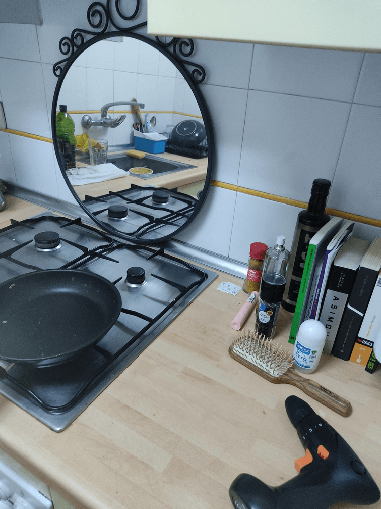

New ways to sense the time, use smells to perceive the time.
Metahuman group prototypes.
Living with your own ideas.
Magic Object
The magic machine workshop was about designing and thinking by making with scrap material a “magic machine” that fills the needs of an imaginary person. I started drawing a “self” that look tired so that’s why I prototype a machine related to time and its course. Finally, I finished the prototype as a new approach to measuring our life quality by seeing how many coffees we drink during a week. It works as a visual stimulus with the amount of bags and olfactory as well as the smell of coffee. with the group, I felt a deep connection between us because all our prototypes were related to perception and senses, a way to explore new ways of interaction.
Make it weird, make it strange - Defamiliarization of space and things
“Some links between objects become evident using these techniques. My day started with a mirror in a kitchen and ended with some makeup, a hairbrush, and others.”
Reflections
Defined study boundaries, describe the limits of the study.
At first, I tried to make defamiliarization of the domestic things, so I thought that things were my point, but when the day started I realized that the spaces where I placed the “new” things also were affected because the actions I played with the objects. Also, I thought only about domestic things but it changed when I started thinking about bringing outside things as domestic ones. So finally the experiment blurred the limits by itself.
Authenticity, construct validity, being personally involved.
I lived one day in an upside-down home, all activities changed my routines so I preferred just taking some photos and short videos to not change these activities because of the documentation. In some moments I forgot that I was in the middle of an experiment and found myself looking for things in the wrong place and sometimes reality just came into my mind and I realized that I was reading on the sink or eating surrounded by plants.
Plausibility or scholarship, it relates to current research, trends…
People’s behavior is very related to the things that surround them. Design and adding new technologies in domestic spaces have an impact on people’s lives, so it’s important to remember our habits and feel those rituals or things that we normally don’t notice. Also, the experiment brings me the opportunity to see how I pack things. What are the links between things and why?. I put one thing out of context and by using this thing some other things appear around the first object I put. I noticed that the objects built a network and I could see it by making this network obvious.
Criticality, instrumental utility, imagining ways of thinking, and acting differently.
I think this experiment can be done in several ways, the three ways I played and so many others, make things strange by mixing them, put in the outside some from the inside…
Self-revealing communication, communicate openly and transparently without filtering or changing what happened.
In the video, I didn’t show all the things that happened because I was really into the experiment and forgot to document all the actions I made. But I analyzed those actions after the experiment in a more theoretical way.
Ethnographic material with confessional content, personal material to be limited to relevant information in relation to the research subject.
I am embodied in research about data, habits, things, and consumerism so I chose this experiment to give some clarity to the theoretical research I had been doing until this point. To experiment with some ways where I could start to design and challenge the theory that I already study. Absurdity and new relations between things were already some topics that I wanted to explore. I think that some Insights are going to help me a lot in the future.
Generalizability, does it relate to others?
I think that it can be meaningful to others because “things” or objects were not a close space. Waste, behavior, education are concepts within a complex system.